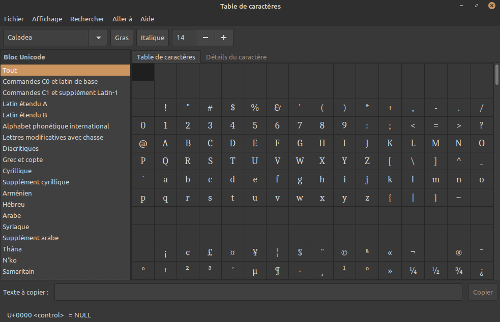
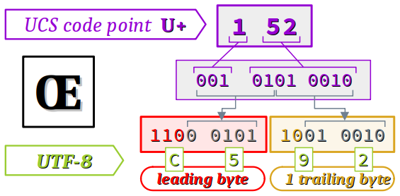
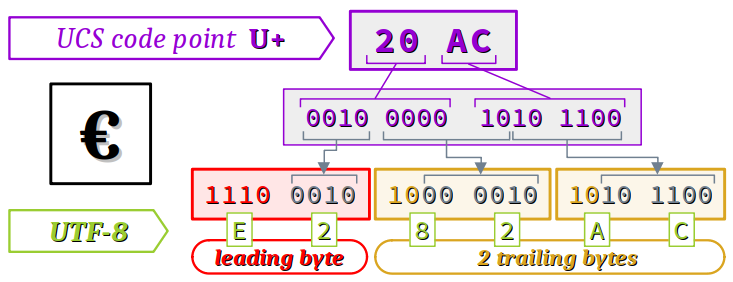
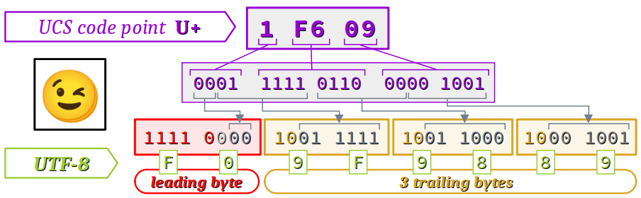

On a vu au chapitre C3‑VIII que les extensions du jeu ASCII restreint via des pages de code est malcommode. En effet, pour prendre en charge l'ensemble des caractères utilisés par les langues asiatiques ou même certains textes multilingues (par exemple, avec la combinaison français‑russe), ou encore un grand nombre de symboles graphiques (émoticônes), on serait contraint de coder fréquemment des instructions de changement de page de code.
En 1991, à l'initiative d'une association à but non lucratif appelée Consortium Unicode W, le standard Unicode a été crée pour constituer le jeu universel des caractères dit UCS (universal coded character set). Soutenu par les grandes entreprises du secteur (Apple, Xerox, Microsoft, IBM…), ce standard a fait l'objet d'une norme internationale ISO/IEC 10646 W qui a introduit plusieurs formats d'encodage nommés UTF (Unicode transformation format), chacun étant bien adapté à divers contextes informatiques. En particulier, le format UTF‑8 s'est depuis largement imposé, notamment pour le codage des caractères des pages web et pour les entrées‑sorties dans les les système d'exploitation Linux ainsi que dans de nombreux logiciels.
Bien sûr, des langages de programmation généralistes comme C et C++ ont évolué pour permettre au codeur de manipuler toutes les valeurs de caractères Unicode. Mais en contre‑partie, les techniques de programmation sont plus complexes que pour les caractères ASCII, et elles dépendent du format d'encodage adopté :
- si le format est à taille fixe comme UTF‑32, les valeurs de caractères peuvent être manipulées comme des données de types caractères larges ;
- mais si le format est à taille variable comme UTF‑8 ou UTF‑16, les valeurs de caractères ne peuvent être manipulées qu'au sein de chaînes de caractères (simples ou larges), via des algorithmes d'encodage multibyte, qui seront abordés seulement au chapitre C5‑VI .
Ce cours, qui ne constitue qu'une introduction aux caractères larges, se donne les objectifs suivants :
- introduire préalablement le standard Unicode – son catalogue et son espace de codage ;
- présenter les trois formats d'encodage UTF‑32, UTF‑16 et UTF‑8, en détaillant leurs principes, avantages et inconvénients ;
- et enfin d'aborder les types de caractères larges, en exposant essentiellement :
Le standard Unicode
Le standard Unicode W comporte 3 aspects :
- le jeu universel des caractères (UCS),
- l'espace de codage – ou de numérotation – des caractères,
- les différents formats d'encodage en mémoire des caractères (UTF‑32, UTF‑16 et UTF‑8).
Les formats d'encodage étant très techniques, ils seront présentés dans la section suivante qui leur est dédiée.
Le jeu universel des caractère
Le jeu universel des caractères – ou UCS pour universal coded character set W, abrégé « abusivement » par le nom du standard lui‑même Unicode – est un catalogue informatique qui répertorie déjà plus de 144 milles caractères (Unicode version 14.0.0 – 2021 ).
L'universalité n'est pas un vain mot. L'UCS a pour vocation de cataloguer :
- tous les caractères « lettres » au sens large (c'est‑à‑dire, aussi les idéogrammes) permettant d'écrire toutes les langues du monde, qu'elles soient contemporaines ou anciennes ;
- tous les symboles mathématiques, graphiques, musicaux, émoticônes, etc. qui sont reconnus par la norme Unicode (il y a chaque année de nouvelles entrées) ;
- tous les caractères de contrôle non pourvus de glyphe mais employés par les systèmes numériques (saut de tabulation, de ligne, etc.).
Pour consulter l'UCS et y rechercher un caractère particulier, que ce soit pour une opération de « copier/coller » ou pour obtenir ses caractéristiques (point de code, codes UTF, etc.), plusieurs moyens existent :
- Il existe des pages au format
pdf, classifiées par familles de langues ou d'alphabets, au lien suivant . - Il existe également des pages web dynamiques comme par exemple celle‑ci qui constitue un véritable catalogue en ligne, .
- On peut aussi recourir à la table des caractères du système d'exploitation d'un poste de travail. Cet utilitaire permet d'avoir une bonne vue d'ensemble des différents blocs de classification et possède des fonctions de recherche (cf. la capture d'écran de celle de Linux Mint ci‑dessous). 
Définition d'un caractère – notion de point de code
Le glyphe d'un caractère peut différer selon la police employée pour l'affichage ou l'impression (cf. ci‑contre différents styles de glyphe du caractères Winking face). Il peut être source de confusion entre des caractères différents mais qui se ressemblent (cf. les exemples infra).
En revanche, le nom et surtout son point de code d'un caractère sont l'un et l'autre uniques ; ils permettent d'identifier le caractère sans ambiguïté.
Pour souligner l'importance de l'unicité du point de code d'un caractère, observons qu'en typographie, il faut ne pas confondre :
- « - » appelé trait d'union - signe moins (en anglais, hyphen‑minus) dont le point de code est U+002D ; outre sa fonction de trait d'union dans les textes, c'est aussi le symbole « moins » qui est employé en programmation comme opérateur de soustraction ;
- « ‑ » appelé trait d'union insécable (en anglais, non‑breaking hyphen), dont le point de code est U+2011 ; contrairement au trait d'union usuel (dont il a pratiquement la même apparence dans les polices de caractères proportionnelles), il interdit aux logiciels de traitement de textes et aux navigateurs de pages web de séparer par un saut de ligne les deux mots qu'il relie ;
- « − » appelé signe moins (en anglais, minus sign), de point de code U+2212 ; c'est le symbole « moins » qui est employé en édition mathématique ; il est plus fin et plus large que le trait d'union, mais un œil inexpérimenté pourrait ne pas percevoir cette différence.
On voit bien à travers ces exemples le risque élevé de confusion pour un débutant qui se contenterait d'identifier les caractères par leur glyphe ou par une lecture approximative de leur nom.
L'espace de codage
Le standard Unicode se réserve un espace de codage qui va des points de code U+000000 à U+10FFFF.
Cet espace compte donc plus d'un million de points de code, ce qui semble a priori très largement suffisant pour tous les besoins actuels et à venir, puisqu'à l'heure actuelle, il y a moins de 150 000 caractères dans l'UCS – cf. supra .
Les points de codes ne sont pas des codes informatiques à proprement parler, ce sont seulement des numéros. Néanmoins, ils constituent une base pertinente pour les différents formats d'encodage – en particulier pour l'UTF‑32, cf. infra .
Division en plans
L'espace de codage est divisé en 17 plans, chacun comptant 65 536 points de code W.
- Le plan 0, appelé plan multilingue de base – ou BMP pour basic multilingual plane W – va des points codes U+000000 à U+00FFFF. Chaque caractère de ce plan peut donc être encodé sur seulement deux octets.
- Le BMP regroupe la totalité de de tous les caractères de presque toutes les langues contemporaines, à l'exception des trois principales langues asiatiques – chinois, japonais et coréen, formant le groupe CJK W – qui ne sont que partiellement incluses (tout en y occupant la majorité du plan – cf. les carrés de couleur saumon ■).
- Le BMP comporte également de très nombreux symboles (numéros, flèches, symboles mathématiques, pictogrammes, etc. – cf. les carrés de couleur magenta ■).
- Le plan 1, dit plan multilingue supplémentaire – ou SMP pour supplementary multilingual plane W – va des points codes U+010000 à U+01FFFF. Il regroupe les caractères des langues anciennes, ainsi que des symboles d'usage contemporain (dominos, cartes à jouer, émoticônes, etc.)
- Les plans 2 & 3 sont respectivement dits :
- plan sinographique complémentaire – ou SIP pour supplementary ideographic plane – il va des points codes U+020000 à U+02FFFF ;
- plan sinographique ternaire – ou TIP pour tertiary ideographic plane – il va des points codes U+030000 à U+03FFFF ;
- Les plans 4 à 16 sont soit non affectés, soit spéciaux, soit privés.

Division d'un plan en blocs Unicode
À l'exception des plans d'usage privé (nº 15 & 16), tout plan de l'UCS se divise lui‑même en blocs dits Unicode pour faciliter le repérage des caractères.
Un tel bloc Unicode W est un ensemble de points de codes successifs identifié par un nom et formant un tout cohérent au regard d'un usage spécifique – typiquement, un jeu de caractères alphabétiques particulier (grec, cyrillique, etc.).
Au début du BMP, on trouve les blocs Unicode suivants :
- Commandes CO et Latin de base (codes U+0000 à U+007F), équivalent au jeu ASCII restreint ;
- Commandes C1 et supplément Latin‑1 (codes U+0080 à U+00FF), équivalent à la partie étendue du jeu ISO‑8859‑1 ;
- Latin étendu A (codes U+0100 à U+017F) et Latin étendu B (codes U+0180 à U+024F) viennent compléter le bloc précédent pour couvrir l'alphabet latin – on y trouve notamment les ligatures « Œ » et « œ » ;
- Supplément pour l'alphabet phonétique international (codes U+0250 à U+02AF) ;
- etc.
La taille d'un bloc Unicode n'est pas uniforme, elle varie de quelques dizaines à plusieurs dizaines de milliers, en fonction des regroupements fonctionnels d'attribution des points de code.
La liste exhaustive des blocs Unicodes peut être trouvée notamment ici ou là .
Les formats d'encodage associés au standard Unicode
Les formats UTF – pour Unicode transformation format – sont des formats d'encodage qui transforment des points de code du jeu universel des caractères en de véritables codes machines pour le stockage en mémoire des valeurs de caractères.
Il existe à l'heure actuelle trois principaux formats – UTF‑8, UTF‑16 et UTF‑32 – dont le nombre indiqué en suffixe précise la largeur en bits de l'unité d'encodage en mémoire du format.
Le format UTF‑32
Le format UTF‑32 W est à taille fixe : chaque caractère est encodé sur une et une seule unité d'encodage constituée d'un mot binaire de 32 bits (4 octets).
Le principe d'encodage de ce format est le plus simple qui soit : l'unité d'encodage d'un caractère est directement son point de code dans l'UCS, exprimé sur 8 digits hexadécimaux (8 × 4 = 32 bits) – cf. la figure ci‑contre.
Ainsi, l'émoticône 😉 nommé Winking face dont le point de code est U+0001F609 est directement encodé 00 01 F6 09 au format UTF‑32.
La simplicité du format UTF‑32 se paye par coût mémoire très élevé. Ainsi, pour un texte en langue européenne encodable en ASCII étendu (un octet par caractère), l'espace mémoire nécessaire devient 4 fois supérieur s'il est encodé en UTF‑32. Il en résulte que ce format est finalement très peu employé.
Pour mesurer l'ampleur du coût mémoire du format UTF‑32, comparons l'encodage d'une chaîne de caractère de style C (avec un caractère NUL ajouté à la fin), comme par exemple "OK" :
- au format ASCII :
O K \0 -------- -------- -------- 01001111 01001011 00000000
O K \0
-------------------------------- --------------------------------- ---------------------------------
00000000000000000000000001001111 000000000000000000000000001001011 000000000000000000000000000000000
Plus généralement, rappelons que l'on peut coder environ 4 milliards de valeurs sur 32 bits (cf. chap. III‑2 ) alors que l'UCS lui‑même ne compte qu'environ 1 millions de points de code. Parmi ces points de code, seulement cent mille environ sont affectés à des caractères. Le format UTF‑32 est donc très largement surdimensionné.
En règle générale, le format UTF‑32 n'est donc envisagé que pour coder des fichiers de textes en langues asiatique ou anciennes comportant une grande majorité de caractères qui nécessitent chacun 4 octets d'encodage, quel que soit le format.
- On pourrait penser pouvoir économiser un octet, puisqu'un format sur 24 bits (3 octets) serait en principe suffisant pour encoder le dernier point de code U+10FFFF. Néanmoins, ce format ne serait pas compatible avec les contraintes d'alignement (cf. chap. C3‑I ) des unités d'encodage sur la plupart des architectures de machines.
- Avec le format UTF‑32, le code de chaque caractères du plan BMP commence par deux voire trois octets nuls. Or dans un processus de lecture de bas niveau (octet par octet), les octets nuls se confondent avec le caractère NUL du jeu ASCII qui est souvent employé (notamment en langage C) pour marquer les fins de chaîne. C'est un autre inconvénient du format UTF‑32, car sans précautions particulières, une telle confusion peut faire échouer des algorithmes de lecture de bas niveau.
Le format UTF‑16
Le format UTF‑16 W est à taille variable :
- chaque caractère est encodé sur 1 ou 2 unité(s) d'encodage, selon le plan de l'UCS auquel il appartient ;
- chaque unité d'encodage étant formée d'un mot de 16 bits.
Le format UTF‑16 est notamment adopté pour l'encodage des caractères par :
- les UEFI W – unified extensible firmware interface, c'est‑à‑dire les interfaces de firmware des cartes‑mères des postes de travail ;
- les système d'exploitation Microsoft Windows ;
- divers standards de langages de programmation (Java, JavaScript, etc.) et certains environnements de programmation (Qt…).
En revanche, UTF‑16 n'est quasiment pas employé pour les pages web car statistiquement, il est moins efficace que le format UTF‑8 en termes de coût mémoire global et de vitesse d'affichage des pages.
Sans entrer dans les détails, le principe général d'encodage des caractères en UTF‑16 est le suivant :
- Les caractères du BMP (cf. supra ) sont tous identifiés par un point de code exprimé sur 4 digits hexadécimaux (4 × 4 = 32 bits). Ils sont donc encodés directement sur un seul mot de 16 bits (2 octets).
- Les caractères des autres plans sont encodés de façon plus complexe sur deux mots de 16 bits en utilisant les 2048 points de code réservés du BMP U+D800 à U+DFF appelées paires de substitution – en anglais surrogate pairs W.
- Les points de code hors du BMP s'échelonnent de U+10000 à U+1F0000. Ils s'expriment sur 6 digits hexadécimaux, mais le digit de poids fort est très peu exploité (il ne prend que les valeurs 0 ou 1, jamais 2, 3, etc.).
- Donc, en soustrayant à tous les points de code la valeur 0x10000, on les ramène dans l'intervalle allant de 0x00000 à 0xFFFFF, avec à la clef un digit en moins. Il ne reste donc plus que 5 digits hexadécimaux à encoder, soit 5 × 4 = 20 bits, sachant qu'on dispose de deux mots de 16 bits, soit 32 bits. Cela fait 12 bits supplémentaires que l'on peut exploiter.
-
110110pour le mot de haut rang ; -
110111pour le mot de bas rang. - allant de U+D800 (
1101 1000 0000 0000) à U+DBFF (1101 1011 1111 1111), - et de U+DC00 (
1101 1100 0000 0000) à U+DFFF (1101 1111 1111 1111),
La lettre « Œ » (ligature capitale O E ) dont le point de code est U+0152 est directement encodé 01 52 au format UTF‑16.
- Un débutant pourrait être surpris par le fait que réserver 2048 points de code – les paires de substitution – soit suffisant pour l'encodage des dizaines de milliers de caractères hors du BMP. Mais il ne faut pas perdre de vue que ces points de code ne sont pas utilisés directement comme des codes. C'est bien entendu par la combinatoire des paires (1024 × 1024) que l'encodage au format UTF‑16 permet de couvrir tous besoins actuels et futurs.
- Comme pour le format UTF‑32, le format UTF‑16 peut poser des problèmes aux algorithmes de lecture de bas niveau (octet par octet) par confusion entre le marqueur de fin de chaîne – le caractère NUL – et les octets nuls dans les codes de certains caractères.
Le format UTF‑8
Le format UTF‑8 W est à taille variable :
- chaque caractère est encodé sur 1 à 4 unité(s) d'encodage, selon la largeur de son point de code en termes de nombre de bits à encoder ;
- chaque unité d'encodage étant formée d'un mot de 8 bits, c'est‑à‑dire un octet.
Le format UTF‑8 est très largement adopté – et de plus en plus – dans de nombreux contextes de l'informatique, parce qu'il optimise le coût mémoire de stockage des fichiers contenant du texte, quelle que soit sa nature (documents, code, etc.) :
- pages web – et donc, logiciels navigateurs ;
- fichiers bureautiques au format OpenDocument W ;
- systèmes d'exploitation comme Unix, Linux, Android …
- nombreux langages de programmation et IDE – notamment, C/C++, Python, Arduino…
L'encodage au format UTF‑8 recourt à l'auto‑indexation systématique des unités d'encodage par des motifs initiaux sur leurs bits de hauts rangs. Ces motifs sont différents selon le nombre d'unités d'encodage nécessaire à l'encodage :
- Si le caractère est encodé sur un seul octet, ce dernier prend le motif initial
0sur son bit de haut rang (d7). - Sinon :
- Le motif initial de l'octet de tête – c'est‑à‑dire de haut rang (leading byte) – un motif initial formé de n bits à
1, autant que le nombre d'octets du code du caractère, suivi d'un0. - Le motif initial des octets de suite (trailing bytes) est
10.
110 pour un caractère codé sur 2 octets, 1110 pour un caractère codé sur 3 octets, etc. Tous les autres bits de l'octet de tête et des octets de suite forment l'espace d'encodage disponible. Le tableau ci‑dessous récapitule ces différents éléments.
| Plans UCS |
Points de code |
Nbre octets |
Format des octets | Espace d'encodage (bits •) |
|---|---|---|---|---|
| 0 (BMP) |
U+0000 à U+007F |
1 |
0••• •••• (idem que l'ASCII restreint)
|
7 bits 128 valeurs |
|
U+0080 à U+07FF |
2 |
110• •••• octet de tête 10•• •••• octet de suite
|
5 + 6 = 11 bits 2 048 valeurs |
|
|
U+0800 à U+FFFF |
3 |
1110 •••• octet de tête 10•• •••• 10•• •••• octets de suite
|
4 + 6×2 = 16 bits 65 536 valeurs |
|
| ⩾ 1 |
U+010000 à U+10FFFF |
4 |
1111 0••• octet de tête 10•• •••• 10•• •••• 10•• ••••
|
3 + 6×3 = 21 bits plus de 2 × 106 valeurs |
Ensuite, le principe d'encodage des bits est le suivant :
- retranscrit en binaire naturel, les valeurs des bits du point de code du caractère sont affectées aux bits de l'espace d'encodage à partir du rang 0 et dans l'ordre croissant des rangs ;
- les bits de hauts rangs non employés sont mis à
0.
- Le symbole « & » (ampersand ) de point de code U+0026 (donc compris entre U+0000 et U+007F) est directement encodé en UTF‑8 sur un seul octet
26.

- La lettre « Œ » (latin capital ligature O E ) de point de code U+0152 (donc compris entre U+0080 et U+07FF) est encodé en UTF‑8 sur les 2 octets
C5 92, conformément au schéma ci‑dessous.

- Le symbole « € » (euro sign ) de point de code U+20AC (donc compris entre U+0800 et U+FFFF) est encodé en UTF‑8 sur les 3 octets
E2 82 AC, conformément au schéma ci‑dessous. - L'émoticône 😉 (winking face ) de point de code U+1F609 (donc compris entre U+010000 et U+10FFFF) est encodé en UTF‑8 sur les 4 octets
F0 9F 98 89, conformément au schéma ci‑dessous.

- Un intérêt essentiel du format UTF‑8 est son identité d'encodage avec le format ASCII restreint, qui offre une parfaite rétrocompatibilité de tous les fichiers codés dans ce format ancien.
- De plus, grâce au choix judicieux des motifs initiaux, aucun caractère ne peut inclure dans son code un octet nul à part bien sûr le caractère NUL lui‑même qui a le code
0x0. Ce dernier peut donc garder sa fonction usuelle de caractère de fin de chaîne qui déclenche la terminaison des processus de lecture de bas niveau. - Le choix des motifs initiaux est judicieux à plus d'un titre. En particulier, il facilite le tri par ordre lexicographique (collation – cf. chap. C5‑VI ) : si l'octet de tête d'un caractère est supérieur à celui d'un autre, alors cette relation d'ordre vaut aussi entre leurs points de code respectifs.
- Même en réquisitionnant des bits pour l'auto‑indexation des octets, l'espace d'encodage de l'UTF‑8 reste beaucoup plus grand que l'ensemble des points de code du standard Unicode. Cela garantie la possibilité de prendre en charge de nouveaux caractères dans le futur.
- Sur seulement deux octets, le format UTF‑8 permet de coder beaucoup moins de caractères (environ 2 000) que le format UTF‑16 (environ 65 000). Mais globalement, sauf pour les fichiers en langues asiatiques, le format UTF‑8 est quand même plus efficace. En effet, dans la majorité des fichiers source (documents, code, etc.), les caractères dont le point de code est supérieur à U+07FF – donc nécessitant 3 octets d'encodage – sont statistiquement rares. Leur prise en charge ne compromet pas l'économie d'un octet obtenue sur les caractères très fréquents – ceux du jeu ASCII restreint.
Conventions de boutisme
Les conventions de boutismes ont été évoquées dans le contexte général des systèmes informatiques au chapitre C3‑I . Elles existent également pour l'encodage des caractères larges (puisqu'ils sont encodés sur plusieurs octets chacun) – et tout particulièrement dans les formats UTF‑16 et UTF‑32.
Il est possible de signaler la convention de boutisme d'un flux de caractères – chaîne ou fichier – par l'ajout préliminaire au début du flux d'un caractère spécial appelé byte order mark W ou BOM).
En UTF‑16 comme en UTF‑32, le BOM est signalé par le point de code U+FEFF , quelle que soit la convention adoptée.
Inclus dans le BMP, le point de code U+FEFF est défini comme un espace insécable sans chasse, autrement dit un glyphe vide de largeur nulle – et donc visuellement indétectable – derrière lequel aucun saut de ligne ne peut être automatiquement inséré lors d'une mise en page.
C'est l'application effective de la convention de boutisme sur le BOM qui permet aux logiciels traitant le flux de caractères de détecter la convention – et c'est pourquoi on le qualifie de nombre magique W.
- Avec le principe d'encodage du format UTF‑16 exposé supra , le BOM apparaît comme la séquence ordonnée d'octets :
-
FF FEen convention petit‑boutisme – et le format est alors désigné UTF‑16LE (little endian) ; -
FE FFen convention gros‑boutisme – et le format est alors désigné UTF‑16BE (big endian). - Avec le principe d'encodage du format UTF‑32 exposé supra , le BOM apparaît comme la séquence ordonnée d'octets :
-
FF FE 00 00en convention petit‑boutisme – et le format est alors désigné UTF‑32LE ; -
00 00 FE FFen convention gros‑boutisme – et le format est alors désigné UTF‑16BE.
Selon le standard Unicode, en l'absence de BOM dans un flux de caractères, c'est la convention gros‑boutisme est censée s'appliquer par défaut. Toutefois, certains système d'exploitation ne respectent pas cette règle. Ainsi, c'est le format UTF‑16LE qui est utilisé par défaut sous Windows.
Soulignons qu'avec le format UTF‑16 tout particulièrement, une erreur d'évaluation de la convention de boutisme n'est pas détectable automatiquement par une simple analyse binaire. En effet, le format UTF‑16 n'est pas globalement auto‑indexé : les codes de caractères avec leurs octets présentés en ordre inverse sont ceux d'autres caractères.
Considérons tout simplement la lettre « A ». Son code au format UTF‑16LE est le mot de 16 bits 0041 (exprimé en hexadécimal).
Toutefois, si on procède inversion de l'ordre des deux octets, ce mot devient 4100 et correspond au code de l'idéogramme « 䄀 » qui signifie « catastrophe » !
À la lumière de cet exemple trivial, on voit tout l'intérêt que présente le BOM pour éviter les confusions dans un flux de caractères encodé au format UTF‑16.
Cas du format UTF‑8
L'unité d'encodage en UTF‑8 étant d'un seul octet, la notion de convention de boutisme n'a en principe pas de sens dans ce format.
De plus, le format UTF‑8 est intégralement auto‑indexé. Grâce aux motifs binaires initiaux, il est facile de déterminer la convention de boutisme adoptée dès que cela devient nécessaire, c'est‑à‑dire lors de la lecture du premier caractère encodé sur au moins deux octets. En lisant son premier octet :
- s'il s'agit d'un octet de tête, c'est la convention petit‑boutiste qui est adoptée ;
- et s'il s'agit d'un octet de suite, c'est la convention gros‑boutiste.
Néanmoins, certains logiciels – par exemple, l'éditeur de code de l'IDE Microsoft VisualStudio – placent un caractère BOM au début de tout fichier encodé en UTF‑8, dans l'intention de signaler l'emploi de ce format qui n'est natif sur les systèmes d'exploitation Microsoft Windows.
En UTF‑8, le BOM possède le code EF BB BF.
Les types de caractères larges
Généralités
Pour gérer des données de type caractère prenant des valeurs dans tous le catalogue Unicode – donc potentiellement encodées sur plusieurs octets – les langages C et C++ mettent à disposition du codeur trois types de caractères larges (en anglais, wide characters) : wchar_t, char16_t et char32_t.
Ces types sont intégrés dans le noyau du langage C++ depuis la norme C++11.
En langage C, ils ont été introduits par des fichiers d'en‑tête de la bibliothèque standard :
-
wchar_test déclaré dans les fichiersstddef.hetwchar.h; - sa taille vaut 2 ou 4 octets, selon l'implémentation ;
- c'est un type ancien, maintenu pour des questions de compatibilité, mais qu'il est préférable de ne plus utiliser, en privilégiant les types à taille spécifiée décrits ci‑dessous ;
-
char16_tetchar32_tsont déclarés dans le fichieruchar.h; - leur taille est spécifiée en nombre de bits par leur identificateur, quelle que soit l'implémentation (exactement comme les types
int8_t,int16_t) ; - ils sont conçus pour constituer les unités d'encodage des caractères, respectivement dans les formats UTF‑16 et UTF‑32.
De plus, la norme C++20 a introduit le type char8_t pour compléter la série (cf. sa présence dans la liste des mots‑clef du langage C++). Il ne s'agit pas à proprement parler d'un type de caractère large, puisqu'il a les mêmes caractéristiques que unsigned char, mais on peut l'assimiler comme tel en raison de l'usage qui en est fait pour constituer les unités d'encodage du format UTF‑8.
Notons par ailleurs qu'en langage C, il reste possible d'employer simplement le type char pour mémoriser les octets des caractères encodés au format UTF‑8 dans la mesure où ce type possède bien 256 valeurs. Le fait que, le plus souvent la moitié de ces valeurs soient négatives (cf. chap. C3‑II ) n'est pas un problème rédhibitoire. Toutefois, il importe de ne jamais perdre de vue cet aspect dans les algorithmes programmés, en particulier lorsqu'on opère des tests de comparaison numérique sur les codes des caractères. Il suffit en principe d'opérer une conversion dans le type unsigned char lorsque cela est nécessaire.
Le programme académique ci‑dessous emploie une chaîne de caractères u8"Ça" encodée au format UTF‑8. Elle est déclarée comme un pointeur (cf. chap. C2‑VI ) dans le type signed char* pour montrer le fait qu'un type d'encodage signé ne pose pas de problème.
#include <stdio.h>
signed char * text = u8"Ça";
int main(void) {
printf("\"%s\" : ", text);
while (*text) printf("0x%hhX ", *text++);
return 0;
}
L'instruction de la ligne nº6 affiche la chaîne. Quand à la ligne nº7, elle affiche successivement le code hexadécimal respectif de chaque octet d'encodage des caractères de cette chaîne (c'est‑à‑dire tels qu'ils sont mémorisés) via la spécification de conversion %hhX, donc dans le type unsigned char. Avec OnlineGDB, on obtient la sortie attendue :
"Ça" : 0xC3 0x87 0x61
En effet, on peut vérifier qu'au format UTF‑8:
On verra ainsi au chapitre C5‑VI que les fonctions de la bibliothèque standard du langage C qui opèrent sur les chaînes de style C ont leurs arguments formels le plus souvent déclarés dans le type char*. Néanmoins, elles sont opérationnelles pour des chaînes de caractères encodées au format UTF‑8.
Codage des valeurs de types caractères larges
Dans un programme source en langages C et C++, on code des valeurs de caractères larges :
- avec la même syntaxe que celle des caractères simples, pour mémoire (cf. chap. C3‑VIII ) :
- avec des guillemets simples
'', - et entre les guillemets, soit par syntaxe automorphe , soit par séquences d'échappement.
- mais en employant un préfixe d'encodage :
L,uouUrespectivement pour les typeswchar_t,char16_tetchar32_t.
Syntaxe automorphe
Dans un éditeur de code, pour permettre la syntaxe automorphe de toutes les valeurs de caractères imprimables de l'UCS – c'est‑à‑dire directement par les glyphes des caractères, qui peuvent être générés par les touches du clavier ou par copier‑coller depuis une table des caractères – il est recommandé de choisir le format UTF‑8 pour le fichier source.
- sous Code::Blocks, on passe par le menu
Settings/Editor…et l'ongletEncoding settings(cocher l'optionAs default encodingsi les fichiers ont un format d'encodage initial différent) ; - sous Sublime Text, ce choix est en général celui par défaut (cf. la valeur de l'attribut
default_encodingdans le fichier de préférence du répertoireDefaultouvert via le menuPreferences/Settings) ; sinon, il faut coder ce choix dans le fichier de préférence du répertoireUser.
Syntaxe alternative par séquences d'échappement
Pour les caractères non imprimables, ou même si la syntaxe automorphe n'est pas opérationnelle sur l'éditeur de code, une syntaxe alternative permet de coder n'importe quelle valeur de caractère de l'UCS à partir du point de code U+A0 ; il suffit d'employer une séquence d'échappement de la forme :
On rappelle (cf. chap. C3‑XIII ) que les valeurs de caractères des points de code U+00 à U+FF (inclus) sont quant à elles codables avec une séquence d'échappement préfixée par \x ou \X comme pour les caractères simples.
Tous les exemples ci‑après peuvent être testés en langage C dans l'environnement OnlineGDB en utilisant le programme générique suivant :
#include <stdio.h> #include <uchar.h> type c = préfixe'glyphe ou séquence d'échappement'; int main(void) { printf("%x\n", c); }
où :
- la déclaration (ligne nº 4) est à adapter au cas par cas de chaque exemple ;
- l'instruction d'affichage (ligne nº 7) affiche le code hexadécimal du caractère dans le format codé par le préfixe dans sa déclaration ; cela permet ainsi de vérifier que la déclaration du caractère a été interprétée correctement par le compilateur.
- La lettre « A » de l'alphabet latin (point de code U+41 ) :
- se code
U'A'ouU'\x41'dans le typechar32_t; - se code
u'A'ouu'\x41'dans le typechar16_t; - se code
'A'ou'\x41'dans le typechar(comme n'importe quel caractère du jeu ASCII restreint) ; - La lettre « Ω » de l'alphabet grec (oméga – point de code U+3A9 ) :
- se code
U'Ω'ouU'\u03A9'dans le typechar32_t; - se code
u'Ω'ouu'\u03A9'dans le typechar16_t; - mais ne peut pas se coder dans le type
charpuisque son point de code est supérieur à U+7F (il faudrait 2 unités d'encodage) ; - l'émoticône 😉 (winking face – point de code U+1F609 ) :
- se code
U'😉'ouU'\U0001F609'dans le typechar32_t(attention, elle ne peut être saisie par son glyphe que si la police de l'éditeur de code inclut ce caractère ou si le système d'exploitation procède à une substitution équivalente de police en cas d'absence) ; - mais ne peut pas se coder :
- ni dans le type
charpuisque son point de code est supérieur à U+7F (il faudrait 4 unités d'encodage), - ni dans le type
char16_tpuisque son point de code est supérieur à U+FFFF (il faudrait 2 unités d'encodage).
Manipulation des données de types caractères larges
La manipulation des données de types caractères larges obéit aux mêmes principes généraux que la manipulation de données de type caractère simples (cf. chap. C3‑VIII ).
En effet :
- puisque les types caractères – simples ou larges – sont fondamentalement des types entiers, on peut les manipuler comme tels, avec les opérateurs généraux ; toutefois, seules certaines opérations sont pertinentes en termes de valeurs de caractères (affectation, différence, comparaisons, etc.) ;
- pour des opérations plus techniques, le fichier d'en‑tête
wctype.hde la bibliothèque standard du langage C (cwctypepour le C++), fournit des fonctions analogues à celles déclarées dans le fichierctype, mais pour des données de typewchar_tC.
En fait, les fonctions déclarées dans le fichier wctype.h opèrent sur des données de type wint_t (wide integer type ).
- Dans la pratique, il s'agit d'une extension sur 32 bits du type
wchar_tqui, rappelons‑le, est parfois limité à 16 bits. En particulier, il permet d'inclure le caractère spécial WEOF (wide end‑‑file) qui est très employé dans le traitement des flux de données de types caractères larges. - De ce fait, les fonctions sont opérationnelles aussi pour les données de type
char32_t(et aussi de typechar16_t, bien entendu).
Les exemples ci‑après peuvent être testés dans l'environnement OnlineGDB en utilisant le programme générique suivant :
#include <stdio.h>
#include <uchar.h>
#include <wctype.h>
#include <locale.h>
int main(void) {
setlocale(LC_ALL, "en_US.utf8");
printf("%X\n", expression d'appel à tester);
return 0;
}
(Ici, il est nécessaire de modifier certaines variables d'environnement locales durant l'exécution du programme – cf. l'instruction en ligne nº 7, avec la directive d'inclusion requise en ligne nº 4. Avec OnlineGDB, on doit affecter à la variable LC_ALL la valeur "en_US.utf8" parce que cette locale est bien installée sur le serveur d'exécution, mais sur un PC Linux, on pourrait très bien aussi lui donner la valeur "fr_FR.utf8".)
- La fonction
iswcntrlC (is wide control) teste si son argument est un caractère de contrôle. - L'expression d'appel
iswcntrl(u'€')retourne la valeur0– nulle, donc équivalente à faux au sens booléen – ce qui est correct parce que le symbole monétaire « € » n'est pas un caractère de contrôle. - Et a contrario, l'expression
iswcntrl(u'\t')est évaluée2, donc vrai, ce qui est une fois de plus correct puisque la séquence d'échappement\tcode le caractère de contrôle HT (saut de tabulation horizontale). - La fonction
iswupperC (is wide upper) teste si son argument est une lettre majuscule. - L'expression d'appel
iswupper(u'Ç')retourne la valeur1– non nulle, donc équivalente à vrai au sens booléen, ce qui est correct puisque la lettre « Ç » est bien une majuscule. - Et a contrario, l'expression
iswupper(u'ç')est évaluée0, donc faux, ce qui est une fois de plus correct puisque la lettre « ç » n'est pas une majuscule. - La fonction
towlowerC (to wide lower) retourne le code de la lettre minuscule correspondante à l'argument si ce dernier prend la valeur d'une lettre majuscule ayant une minuscule. Sinon, il retourne simplement le code l'argument. - L'expression d'appel
towlower(u'Ç')retourne la valeurE7qui est bien le code UTF‑16 de la lettre minuscule « ç » C. - L'expression d'appel
towlower(u'€')retourne la valeur20ACqui est le code UTF‑16 du symbole « € » C puisque ce dernier n'est pas une lettre, et donc ne peut être « converti » en minuscule.